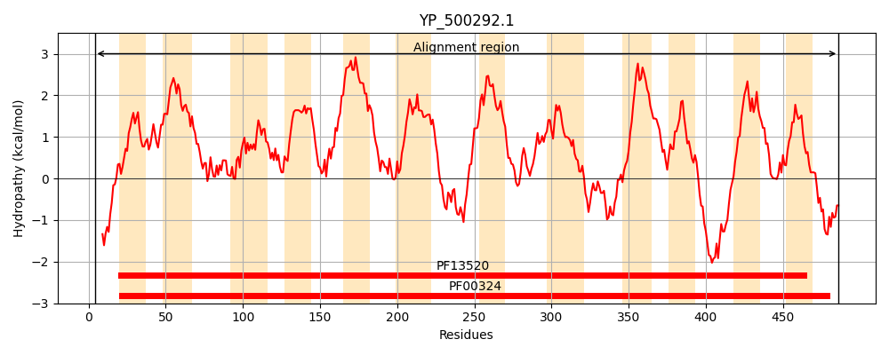
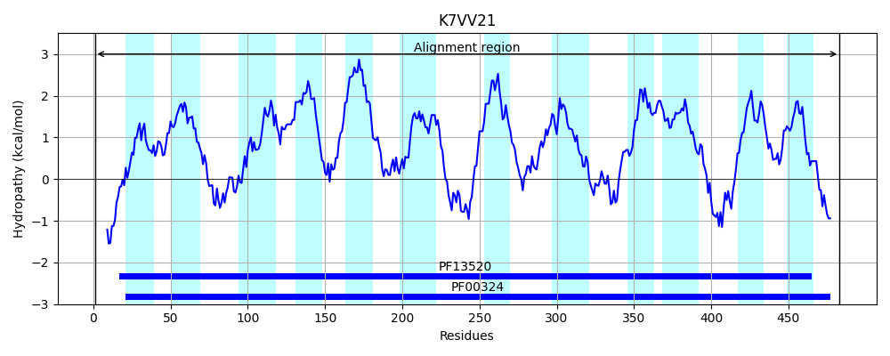
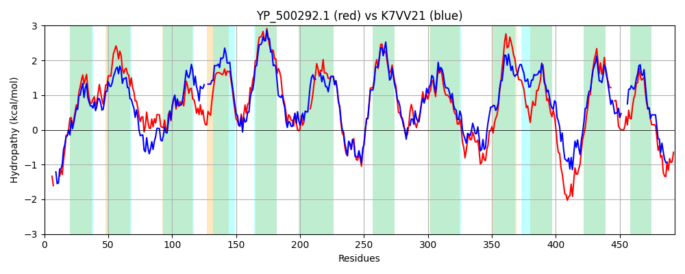

Hit Accession: K7VV21
Hit TCID: 2.A.3.1.18
Hit Description: gnl|BL_ORD_ID|5648 gnl|TC-DB|K7VV21|2.A.3.1.18 Lysine specific permease OS=Lactococcus lactis subsp. cremoris UC509.9 GN=uc509_2172 PE=4 SV=1
Mach Len: 493
e:0.000000
Query TMS Count : 12
Hit TMS Count: 12
TMS-Overlap Score: 10.250000
Predicted Substrates:CHEBI:25094;lysine
BLAST Alignment:
Score: 1387 , Bit scores: 538 bits, E-value: 0.0e+00, Alignment length: 493, Percentage identity: 55
Query: 4 VQNESNNV----VKRGLKDRHISMIAIGGCIGTGLFVTSGGAIHDAGALGALIGYAIIGIMVFFLMTSLGEMATYLPVSGSFSTYATRFVDPSLGFALGWNYWFNWVVTVAADITIAAQVIQYWTPLQGIPAWAWSALFLVIIFSLNSLSVRVYGESEYWLALIKVVTVIVFIAIGLLTIVGIMGGHVVGFEIFNKGEGPILGG----NLGGSLLSILGVFLIAGFSFQGTELIGITAGESENPERAVPKAIKQVFWRILLFYILAIFVIGMLIPYDSSALMGGSDNVATSPFTLVFKNAGFAFAASFMNAVILTSVLSAGNSGMYASTRMLYSMSKDKLAFEAFGKTNKNGVPYMSLLVTAIIVVIIFVLQSLTKGAYEYIVAASGLTGFIAWVGIAVSHYRFRRAFDKQNYDKSKLKYTAKLFPFGPLFAGFLCIVVIIGQD--VDFIKTGDFNFSRFLITYMGIPVFLAFFIYHKLRYKTKKIPLEQVDL 486
++N SN+ VKRGLK RH+SMIA+GG IGTGLF+TSG IH AG GAL Y +IG MV+FLMTSLGEMATYLP SGSFS Y TR+VDP+ GFALGWNYW NW +TVA D+T A I++W P +P+W +S + L+I+FS+N+LSV+ +GE+EYWL+ IK+ V++F+ IG L+I GIMGGH+ + + G +GG GG ILGV L+AGFSFQGTEL+GITAGE+ENPE+++PKA+ +FWRIL+FYIL+IFV+ +IP+ L+GG+ + A SPFT+VF+ GF+ AAS MNAV+LTSV+SA NSGMYASTRMLYS++KD A F KT+KNG+P+++LL T + ++ F+ + ++V+ASGLTGFIAW+GIA+SH+RFRRA+ Q D KL Y AKLFPFGP+ A + ++V +GQD + F KT + + ++ Y IP+F ++ +K + KTK IPL+ VDL
Sbjct: 1 MENSSNSTTEMQVKRGLKSRHVSMIALGGTIGTGLFLTSGDVIHTAGPFGALTAYVLIGAMVYFLMTSLGEMATYLPTSGSFSDYGTRYVDPAFGFALGWNYWLNWAITVAVDLTAVALCIKFWLP--DVPSWIFSLIALIIVFSINALSVKTFGETEYWLSAIKITVVVLFLIIGFLSIFGIMGGHIDVAKNLSVGNHGFVGGLGSFTTGGG---ILGVLLVAGFSFQGTELLGITAGEAENPEKSIPKAMNSIFWRILVFYILSIFVMAAIIPFTDPHLVGGN-SAAQSPFTIVFERVGFSIAASIMNAVVLTSVVSAANSGMYASTRMLYSLAKDGGAPTIFSKTSKNGIPFIALLATTAVALLTFLTSIYGVSFFTFLVSASGLTGFIAWIGIAISHFRFRRAYVAQGKDVKKLPYHAKLFPFGPILALIMTVLVTLGQDPMLLFGKT----WVQGVVMYAAIPLFFILYLGYKFKNKTKLIPLKDVDL 483 | Protein Hydropathy Plots: |
|---|
|  |  |
Pairwise Alignment-Hydropathy Plot:
|
|---|
|  |